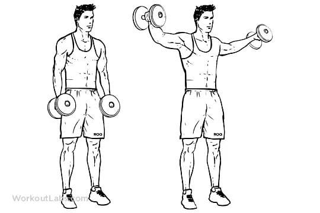
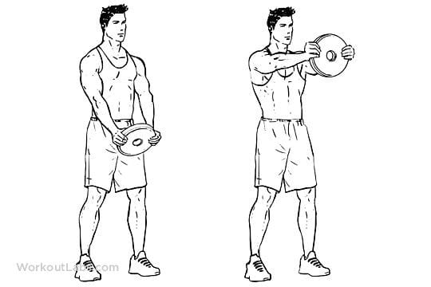
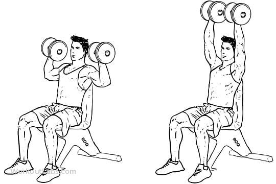
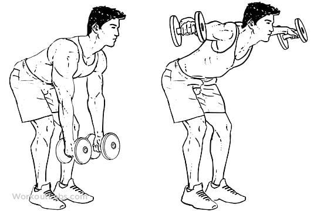
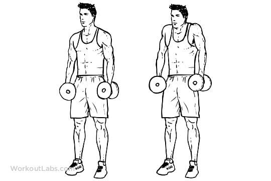

Lateral Raise

For the lateral raise, begin by using a weight that you can control for 2–3 sets of 8–12 repetitions. Choose a weight that allows you to maintain good technique throughout all sets and repetitions.
Grab two dumbbells and stand with your feet hip-width apart with a slight bend in your knees. Your posture should be tall with your hips slightly bent forward with a neutral head and neck position. Your shoulders should be slightly ahead of your hips. Your chin should remain tucked throughout the movement, as if you were holding an egg under your chin. Distribute your weight evenly along your feet. Grip the floor with your feet to create a stable foot position. Hold the set of dumbbells by your sides with your palms facing your legs. Your palms should be slightly on the inside of your outer leg. Your arms should be long with a slight bend in your elbows. All repetitions should begin from this position.
Pretension your shoulders and hips while engaging your core.
Initiate the upward movement by slowly lifting your arms away from your body. Allow the shoulder blades to move naturally with the shoulder joint. Continue to raise your arms until your elbows are at shoulder height or just below your shoulders. You should still feel tension in your shoulders. Your palms should be facing the floor at the top of the movement.
Pause at the top of the movement.
Lower the dumbbells toward your legs in the same plane in which you lifted them. Return to the starting position while maintaining tension in your shoulders, then initiate a new repetition
Front Raise

The front plate raise is a front raise variation that challenges the lifter to raise a weight plate from hip height in an arc direction until the arms are straight ahead and the plate is at shoulder height.
Dumbbell Shoulder Press

Hold the dumbbells by your shoulders with your palms facing forwards and your elbows out to the sides and bent at a 90° angle. Without leaning back, extend through your elbows to press the weights above your head. Then slowly return to the starting position.
Rear Delt fly

For the rear delt fly, begin by using a weight that you can control for 2–3 sets of 8–12 repetitions. Choose a weight that allows you to maintain good technique throughout all sets and repetitions.
Grab two dumbbells and stand with your feet shoulder-width apart with a slight bend in your knees. Your shoulders should be directly over your hips with a neutral head and neck position. Your chin should remain tucked throughout the movement, as if you were holding an egg under your chin. The weight on your feet should be evenly distributed along each entire foot. Grip the floor with your feet to create a stable foot position.
While maintaining a neutral spine, hinge your hips back. Your shins should be vertical and your upper body should be at a 30- to 45-degree angle. You should feel your legs working to support your position. Your arms should be long in front of you with a slight bend in your elbows, and your palms should face each other.
Rotate your shoulders outward to engage your lats. Your shoulder blades should be in a neutral position. All repetitions should start from this position.
While maintaining your alignment and a slight bend in your elbows, squeeze your posterior deltoids to initiate the upward movement.
Lift your arms until your upper arm is even with your back. As you lift the dumbbells, your shoulder blades should retract. Your hands should be lower than your upper arms.
Pause at the top of the movement for 1–2 seconds.
Slowly lower your arms until the dumbbells are back in the starting position. As you lower the dumbbells, your shoulder blades should protract. Lower the dumbbells only as far as you can maintain tension on your posterior deltoids.
Shrugs

Perform dumbbell shrugs by grabbing a pair of dumbbells and holding them by your sides with a neutral grip. Keep your arms straight as you lift your shoulders toward your ears. Pause for a moment before lowering your shoulders back to the starting position. Repeat this movement for the desired amount of time.